The 1-minute version
Ahiri’s store now sends automatic reminder emails to shoppers who almost bought something but left. Before these emails go to real customers, we test them by pretending to be a shopper ourselves: we visit the store, put something in the cart or start paying, then walk away on purpose — and watch the reminder emails arrive in our own inbox.
The three email sequences
| Cart reminder | For shoppers who put items in their cart but never started paying. 3 gentle emails: “You left something behind" → “A closer look" → “Last chance". |
| Checkout reminder | For shoppers who started paying (typed their email at checkout) but didn’t finish. 3 emails: “You were so close" → “Questions about your order?" → “Your order won’t wait forever". |
| Browse abandonment (Dresses) | For logged-in customers who viewed a dress product page but left without adding anything to their cart. 3 emails: “Dresses meant to be noticed" → “How it comes together" → “Worth a second look". |
Priority order: a shopper who reaches checkout gets the checkout sequence only — it suppresses all others. A shopper who adds to cart gets the cart sequence, suppressing browse. Each shopper gets exactly one sequence at a time.
The trick that makes testing possible: “+test" emails
Gmail has a hidden feature: mail to azriah.aziz+test1@gmail.com or azriah.aziz+test2@gmail.com all lands in the normal azriah.aziz@gmail.com inbox. But the store doesn’t know that — it thinks each one is a different brand-new customer. Think of it as testing with disguises: every test run wears a fresh disguise (+test1, +test2, +test3...), and all the mail still comes home to us.
| Rule 1 | Use a fresh number every test (+test6, +test7...). Reusing one makes the store think “I already reminded this person" and it stays silent. |
| Rule 2 | Keep a simple log: which number was used for which test. |
| Rule 3 | At checkout, always tick “Email me with news and offers". |
| Rule 4 | When testing is finished, delete the +test customers in Shopify so reports stay clean. |
Words you’ll see (plain meanings)
| Automation / flow | A recipe the store follows by itself: “when X happens, wait a while, then send email Y". No human presses send. |
| Trigger | The event that starts the recipe — e.g. “a shopper left without buying". |
| Check / condition | A yes-or-no question inside the recipe — e.g. “does this person’s email contain +test?" If no, the recipe stops for that person. |
| Abandoned cart | Shopper put items in the cart, then left. Like a trolley left in a supermarket aisle. |
| Abandoned checkout | Shopper got to the till, gave their email, then left before paying. |
| Run history | The automation’s diary — one entry per shopper it processed, showing what it decided and why. Our main tool for checking whether a test worked. |
| Test fence | The “+test only" safety filter described above. It must be removed when we go live, or no real customer will ever get the emails. |
What a finished test looks like
A sequence passes when all four are true: (1) the automation’s run history shows our test shopper went through with every check answering “yes", (2) all 3 emails arrived in our inbox in the right order, (3) every email looks right on a phone and computer and its button takes you back to your exact cart/checkout, and (4) when we DO complete the purchase, the remaining reminders stop (nobody should be nagged to buy something they already bought).
Sequence 1 · Cart reminder
The recipe as built in Shopify (there it’s called “TEST - Ahiri Cart Abandonment"), in plain English:
Testing Sequence 1, step by step
| Step | What to do |
|---|---|
| 1 | Introduce the test identity to the store: Go to ahiri.ca and physically Create a Customer Account (or log in) using a fresh +test address. Note: Do not just use the newsletter popup, since its not available in the moment due to using brevo. |
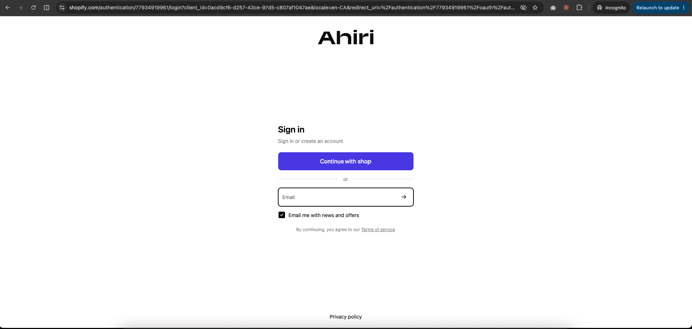
Step 1 — login using the +test address| Step | What to do |
|---|---|
| 2 | Open a new incognito / private window in your browser. All remaining steps in this sequence must be done inside that window so there are no leftover cookies from a previous test. |
| 3 | simply log in to the customer account in the incognito window. After logging in, return to the homepage in the same browser tab (for example, by clicking the Ahiri logo) and continue browsing or add an item to the cart. |
| 4 | In that same incognito window: open a product and add it to the cart. Do not click Checkout — that would start the other sequence. |
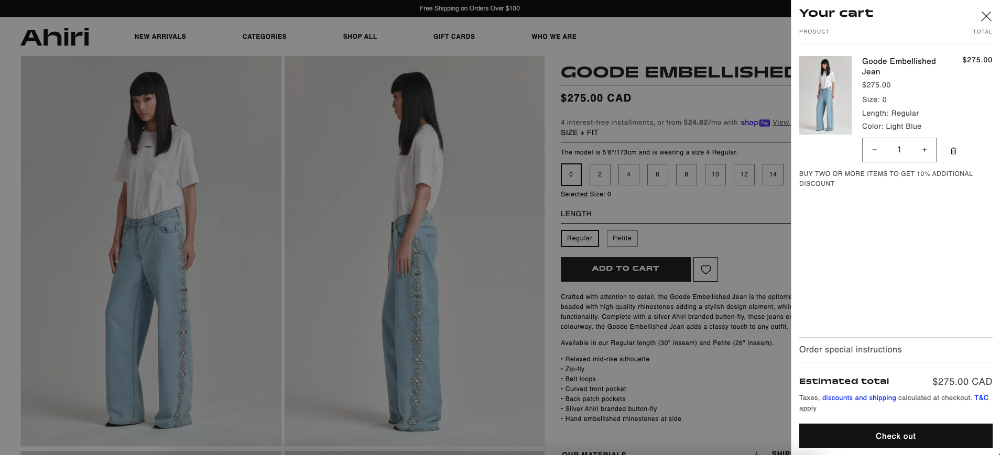
Step 4 — the cart on ahiri.ca with the product in it, just before closing the tab| Step | What to do |
|---|---|
| 5 | Close the tab and walk away. The store may take up to ~30 minutes to decide the visit is over. |
| 6 | Check it worked: open the automation in Shopify and look at its run history — there should be a new entry for your test, with every check answering “yes". |
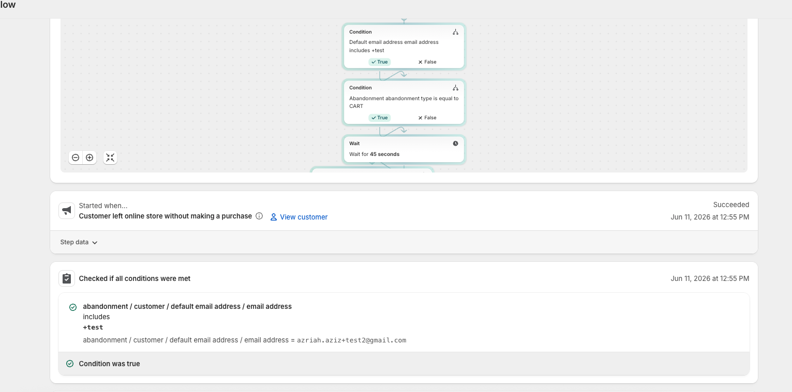
Step 6 — the run history entry showing your test with every check answering “yes" (green)| Step | What to do |
|---|---|
| 7 | Email 1 “You left something behind" arrives after the wait. Check: product photo shows, the button opens your cart, no discount is mentioned. |
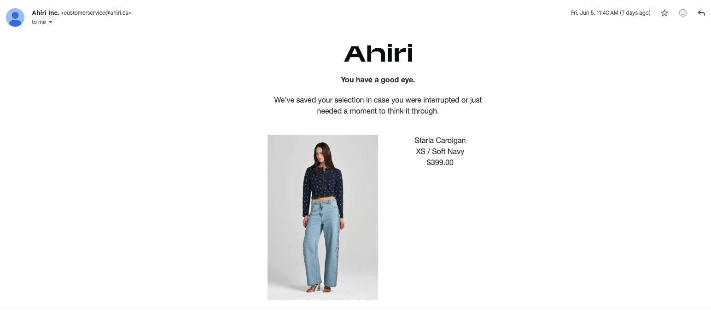
Step 7 — Email 1 “You left something behind" as received in the Gmail inbox| Step | What to do |
|---|---|
| 7 | Emails 2 and 3 follow. Read each on both phone and computer. |
| 8 | The “stop" test: with a fresh +test number, repeat steps 1–5, then go back and empty the cart before the wait ends. No emails should arrive. |
Sequence 2 · Checkout reminder
The recipe as built (in Shopify it’s called “Recover abandoned checkout"). This one is simpler to test because typing an email at checkout is exactly what makes the shopper reachable.
Testing Sequence 2, step by step
| Step | What to do |
|---|---|
| 1 | Open ahiri.ca in a private/incognito window. Add any product to the cart and click Checkout. |
| 2 | In the email box, type a fresh +test address (e.g. azriah.aziz+test7@gmail.com) and tick “Email me with news and offers". |
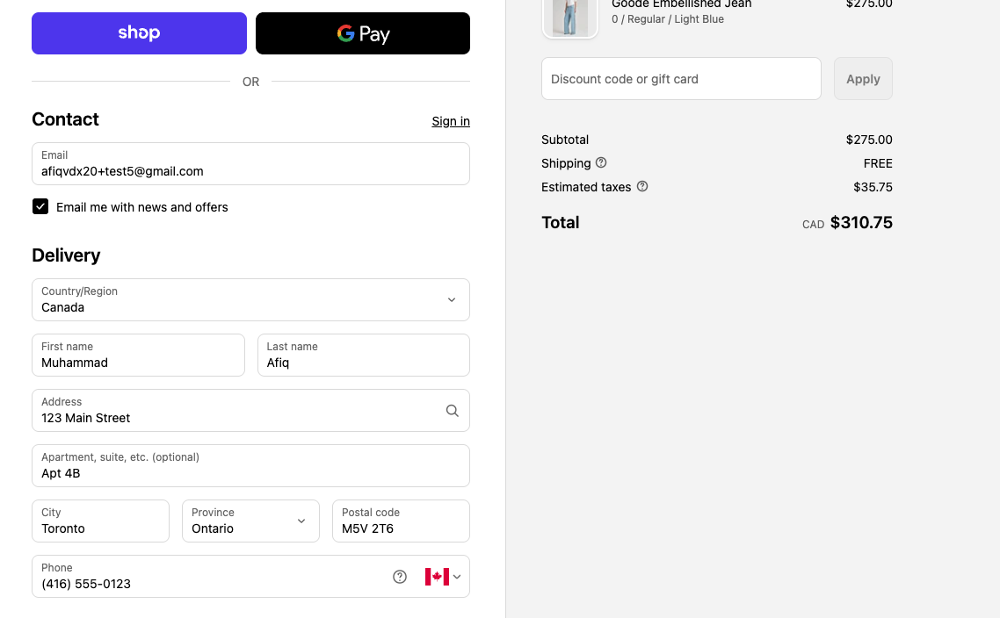
Step 2 — the checkout Contact box with the +test email typed in and the news-and-offers box ticked| Step | What to do |
|---|---|
| 3 | Fill in your name and address, continue until you can see the card payment boxes. |
| 4 | Close the tab. Do not pay — never type a real card number during testing. |
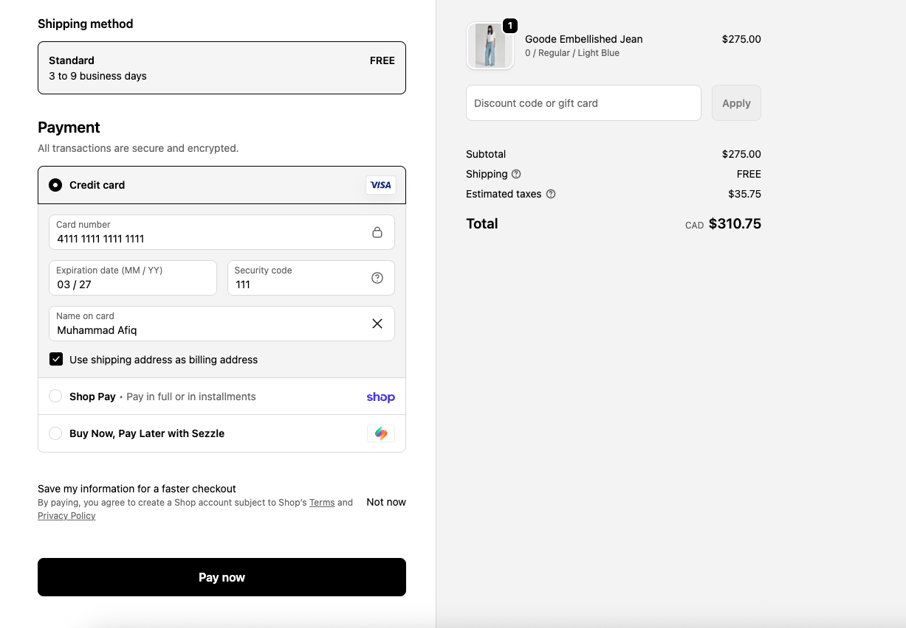
Step 4 — the payment step (card boxes visible,) — the moment to close the tab| Step | What to do |
|---|---|
| 5 | Check it worked: the automation’s run history should show a new entry within a few minutes, every check answering “yes". |
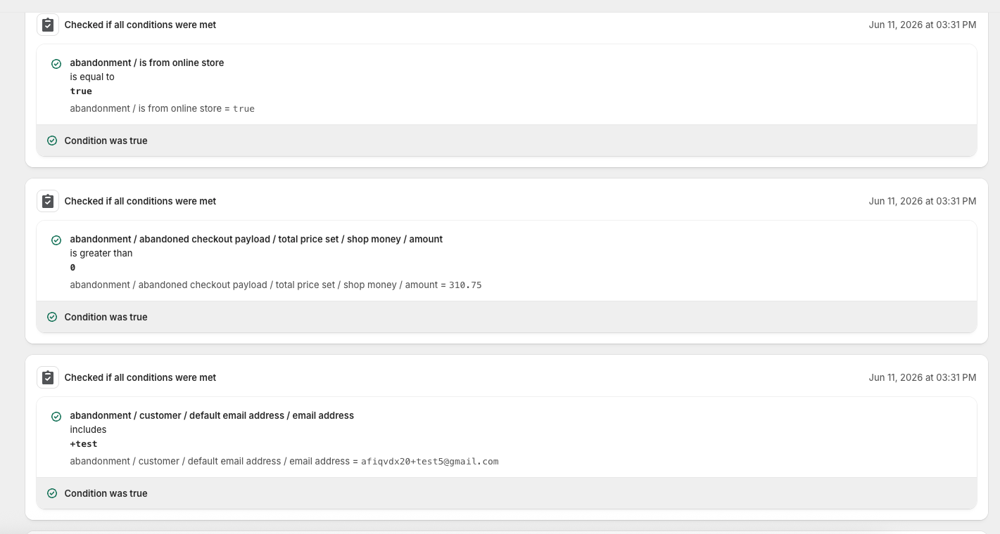
Step 5 — the run history entry — all checks “yes", including “Is their email a +test address?"| Step | What to do |
|---|---|
| 6 | Email 1 “You were so close" arrives ~5 minutes later. Check: your items and total are shown, the button takes you back to your half-finished checkout, the customer-service address is there. |
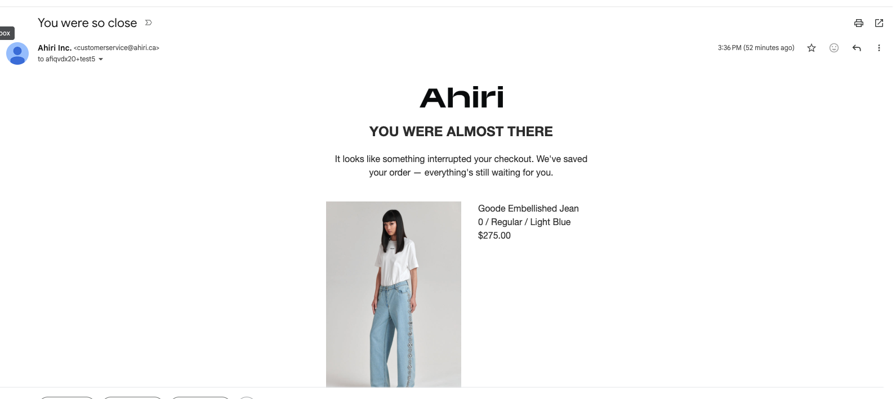
Step 6 — Email 1 “You were so close" in the inbox, showing the items and the Complete-your-order button| Step | What to do |
|---|---|
| 7 | Emails 2 and 3 follow. Read each on both phone and computer. If an email contains a discount/free-shipping button, click it and confirm the discount appears at checkout by itself. |
| 8 | The “stop" test: with a fresh +test number, abandon a checkout, wait for Email 1, then go back through its button and finish the purchase using a 100%-off code (ask the owner to create a hidden one). Emails 2 and 3 must NOT arrive. Cancel the $0 order afterwards. |
abandonment.customer.defaultEmailAddress.emailAddress with
“includes +test". Don’t point it at the orders email — a new
customer has no orders yet, so that field is empty and the check always
answers “no" (this exact mistake happened and was fixed on June 11).
Sequence 3 · Browse abandonment (Dresses)
This sequence targets logged-in customers who viewed at least one dress product page but left without adding anything to their cart. Unlike the cart and checkout flows, the shopper hasn’t committed to anything yet — so the tone stays light and the emails add value rather than push.
Testing Sequence 3, step by step
| Step | What to do |
|---|---|
| 1 | Visit the live Ahiri store at ahiri.ca. |
| 2 | Log in to a customer account using your +test email address (e.g. azriah.aziz+test8@gmail.com). This is the critical identity step — without it, Shopify cannot connect your browse session to an email address and the automation will never fire. |
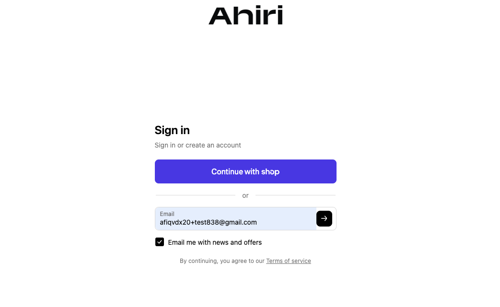
Step 2 — sign in with your +test address and tick “Email me with news and offers"| Step | What to do |
|---|---|
| 3 | Navigate to the Dresses collection page: ahiri.ca/collections/dresses. |
| 4 | The critical step: click on at least one specific dress to open its full product page. Stay on it for a few seconds so the store registers the view — do not just scroll past on the collection page. |
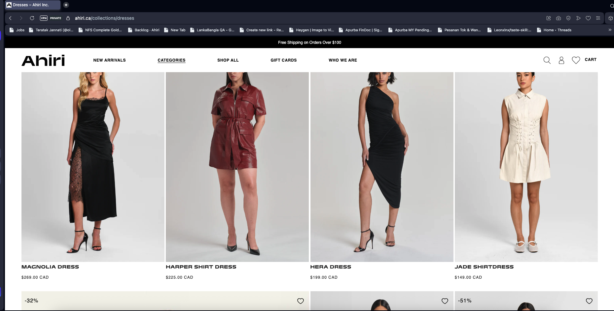
Step 4 — navigate to the Dresses collection and click into a product page; linger for a few seconds| Step | What to do |
|---|---|
| 5 | Close the tab completely without adding the dress to your cart. Adding to cart would exit this flow and start the cart abandonment sequence instead. |
| 6 | Check it worked: open the browse abandonment automation in Shopify and look at its run history — there should be a new entry for your +test address with every check answering “yes". |
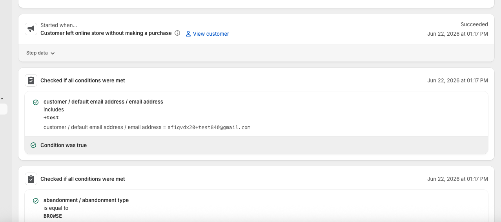
Step 6 — run history entry showing the +test shopper with every check “yes" (green)| Step | What to do |
|---|---|
| 7 | Email 1 “Dresses meant to be noticed” arrives after the wait. Check: hero image shows, the button links to the dresses collection or the specific product viewed, no discount is mentioned. |
| 8 | Email 2 “How it comes together” follows at 24 hours. Check: styling copy is present, button links back to the dresses collection, no discount is mentioned. |
| 9 | Email 3 “Worth a second look” follows at 7 days. Check: copy reads as a gentle final nudge, button links back to the dresses collection, no discount is mentioned. |
| 10 | The “stop” test: with a fresh +test number, repeat steps 1–5, then go back and add the dress to the cart before the wait ends. The browse emails must NOT arrive (the cart flow takes over instead). |
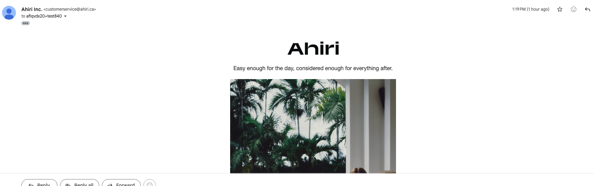
Step 7 — Email 1 “Dresses meant to be noticed" as received in the Gmail inboxSequence 4 · Nurture Welcome Series
Objective: To verify that the Welcome Automation successfully delivers the onboarding emails on schedule, while automatically protecting the customer experience by stopping the final nudge if a purchase is made.
How to Test This Yourself (Manager / Client Guide)
Want to see the automation in action? Follow these steps to trigger the welcome series:
| Step | What to do |
|---|---|
| 1 | Go to the Website: Open a new browser tab and navigate to the Ahiri preview site. Scroll down to the email newsletter signup form (usually in the footer). |
| Step | What to do |
|---|---|
| 2 | Use the "secret" testing email: Enter your normal email address, but add +test right before the @ symbol. Example: if your email is sarah@gmail.com, enter sarah+test@gmail.com. The system recognises it as a test and lets you into the accelerated flow, but the emails still arrive in your normal inbox. |
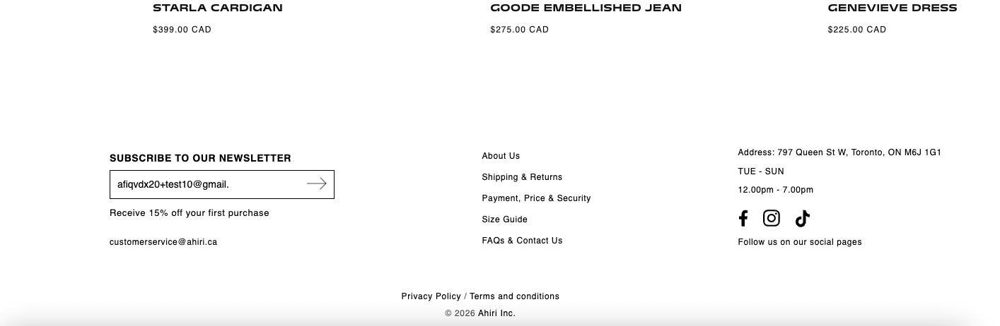
Step 2 — enter your +test email address and subscribe| Step | What to do |
|---|---|
| 3 |
Watch your inbox: Minute 0 — Email 1 arrives immediately upon subscribing. Minute 2 — Email 2 arrives. Minute 4 — Email 3 arrives. |
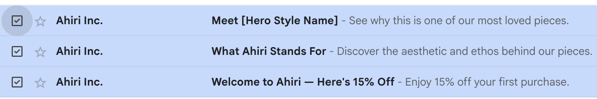
Step 3 — the first 3 welcome emails arriving in the inbox| Step | What to do |
|---|---|
| 4 | Wait 24 Hours: Because the final delay is set to 24 hours, the flow will pause here. The next day, you will receive Email 4, completing the test. (You can also verify this by checking the "Recent Runs" in Shopify Flow to see the workflow in a "Waiting" state). |
Test Scenario A: The Full Nurture Journey (customer does not buy)
| Step | What happens |
|---|---|
| 1 | A new user subscribes to the mailing list via the website footer. |
| → | System Action: Email 1 (Welcome + 15% Off) is delivered immediately. |
| 2 | The system waits for the designated delay (tested at 2 mins). |
| → | System Action: Email 2 (Brand Ethos) is delivered. |
| 3 | The system waits for the next delay (tested at 2 mins). |
| → | System Action: Email 3 (Seasonal Hero Focus) is delivered. |
| 4 | The system waits for the final delay (tested at 24 hours) and checks the purchase history. With 0 orders found, it proceeds. |
| → | System Action: Email 4 (First Purchase Nudge) is delivered, and the flow ends. |
Test Scenario B: The Purchase Safety Net (customer buys early)
| Step | What happens |
|---|---|
| 1 | A new user subscribes to the mailing list and receives Emails 1, 2, and 3 through the accelerated test intervals. |
| 2 | During the final 24-hour waiting period, the customer decides to use their welcome discount and completes a purchase. |
| 3 | After 24 hours, the system resumes and runs its scheduled safety check. It detects that the user now has 1 order on their account. |
| → | System Action: The system marks the condition as "False" and immediately removes the customer from the flow. Email 4 is successfully cancelled. |
If something doesn't work
| What you see | What it means / what to do |
|---|---|
| No entry appears in run history | The store never noticed the abandonment. Checkout test: was the email typed in? Was the +test number fresh? Cart test: the store may need up to 30 minutes, or it didn’t recognise the browser (redo steps 1–2). |
| Entry appears, but a check answered “no" | Open the entry — it shows exactly which question failed and what answer it saw. Usual causes: reused +test number, or (cart test) the store didn’t connect the browser to the email. |
| Checks all “yes", but no email came | Look in the spam/Promotions folder. Confirm the email itself shows “Active" on the automation page. Confirm the news-and-offers box was ticked. |
| Both sequences sent emails for one test | Should be impossible — tell whoever manages the automations; the “cart, not checkout" check (Sequence 1) needs reviewing. |
| An email looks broken on a phone | The design needs editing in Shopify (Apps → Messaging → Templates), then re-test with a fresh +test number. |
Going live (after all tests pass)
| ✓ | Action |
|---|---|
| 1 | Every test above passed for both sequences, including the “stop" tests. |
| 2 | Remove the “+test only" safety fence from BOTH sequences. Until this is done, real customers receive nothing. |
| 3 | Change the wait times back to real ones — Cart: 2h / 24h / 72h. Checkout: 1h / 12h / 24–36h. |
| 4 | Rename “TEST - Ahiri Cart Abandonment" (drop the TEST). |
| 5 | Make sure no other tool (e.g. Brevo, Shopify’s own built-in reminder) is also sending these — a customer must never get two sets of reminders. |
| 6 | Tidy up: delete +test customers, cancel any $0 test orders, switch off the hidden 100% discount code. |
| 7 | For the first 2 days, glance at the run history daily to confirm real shoppers are getting their emails. |
| 8 | After a month, review results (how many came back and bought, how many opened each email) before trying discounts or other experiments. |